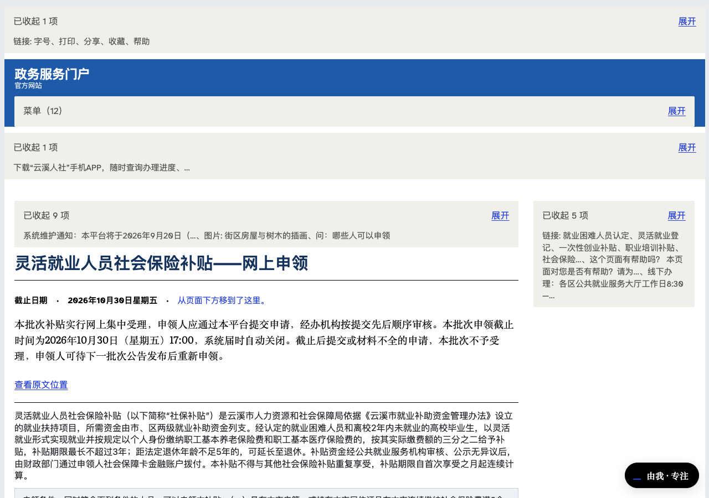
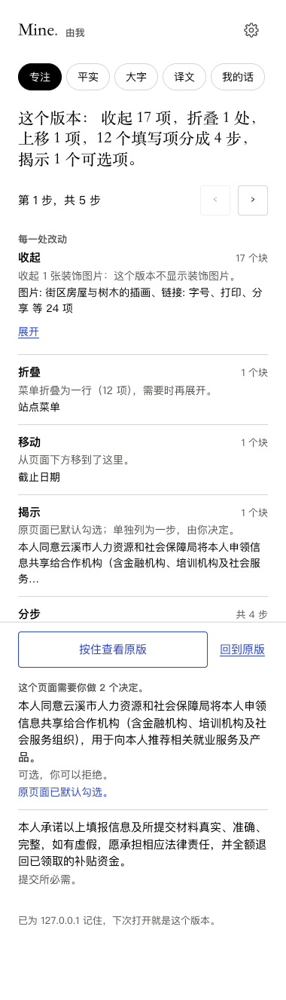

每个页面都预设了一位读者：有时间、眼神好、耐得住术语。
「由我」让你把这位预设读者，换成你自己。
灵活就业人员社会保险补贴——网上申领
灵活就业人员社会保险补贴（以下简称「社保补贴」）是依据《就业补助资金管理办法》设立的就业扶持项目，所需资金由市、区两级就业补助资金列支……
申请提交后，由申领人户籍地或居住地的区级公共就业服务机构受理并初审……
本批次补贴实行网上集中受理，申领人应通过本平台提交申请，经办机构按提交先后顺序审核。本批次申领截止时间为2026年10月30日17:00，系统届时自动关闭……
［下方：12 个填写项 · ☑ 本人同意将申领信息共享给合作机构 · 暂存 / 提交 / 下载 PDF］
截止日期藏在第四段。
十二个填写项，必填标记前后不一。
表单底部，一项默认勾选的数据共享授权。
自动化检测：零违规。
合规，不等于可用。
专注、平实、大字三种预设，或者用你自己的话说：「一次只让我做一个决定」。收起、归组、放大、平实语言、一次一步。
页面要你做的每个决定都摆到台前，标出哪些可选、哪些原本已被默认勾选。我们不替你取消，只确保你看见。
原版只隔一次按住。每一处改动都有理由、都能撤回。没有任何决定是替你做的。

真表单还是真表单：只加注记，不改勾选。

Chrome 侧边栏：收起 17 项、分成 4 步、揭示 1 个选择，每一项可撤回。
识别真实网页是启发式的：九种页面形状 302 个测试，七个真实站点走查通过；认不出的块一律不动，关键内容有不变量兜底。平实语言改写每个数字必须原样保留，否则整段丢弃。
Chrome 商店上架；逐站适配器覆盖政务、社保、银行、医院预约；Safari 与 iPhone 套壳；可携带的偏好护照：说一次你需要怎样的页面，之后每个网站自动照办。
能进入，还不够。
能掌控，才算数。
自由，是能决定世界以什么方式来到你面前。